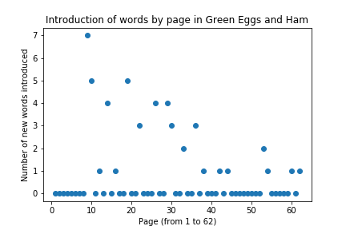
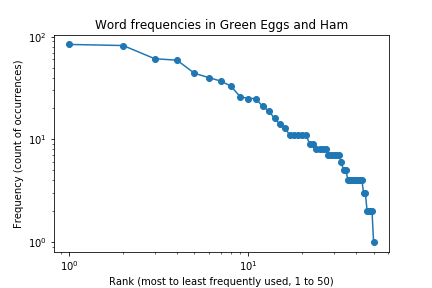
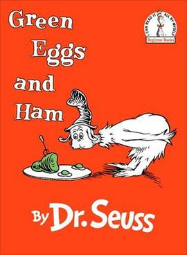

Green Eggs and Ham uses 50 words
Saturday August 15, 2020
I recently heard that Dr. Seuss wrote Green Eggs and Ham using just 50 words to win a bet. Naturally, I had to check. Counting "Sam-I-am" as three distinct words, it is indeed exactly 50 unique words, used 802 total times, with no use of the letters J, P, Q, V, or Z.
Dr. Seuss introduces no more than 7 new words on any one of the book's 62 pages, and indeed eight pages introduce just one new word.

I used only the words that appear printed as text in the book, which ignores the "I am Sam" sign carried by Sam in the illustration on page three (and similar sign on page seven). If those are included, word counts change slightly and the maximum new words on a page is just five.
Green Eggs and Ham doesn't seem to follow Zipf's Law very well. If it did, the log-log plot here should show a straight line rather than being concave. The repetitive nature of the text means more words appear more often than a power law would suggest.

Of course this is a small sample of text, so draw conclusions accordingly.
Here's a list showing numbers of occurrences and each word that appears with that frequency (there are 25 unique frequencies):
- 84: not
- 82: I
- 61: them
- 59: a
- 44: like
- 40: in
- 37: do
- 33: you
- 26: would
- 25: and, eat
- 21: will
- 19: with
- 16: Sam
- 14: could
- 13: am
- 11: green, eggs, ham, here, the
- 9: there, train
- 8: or, anywhere, house, mouse
- 7: box, fox, car, on, dark
- 6: tree
- 5: say, so
- 4: may, see, let, me, be, rain, goat, try
- 3: that, boat
- 2: they, are, good, thank
- 1: if
Data and code is on GitHub.
